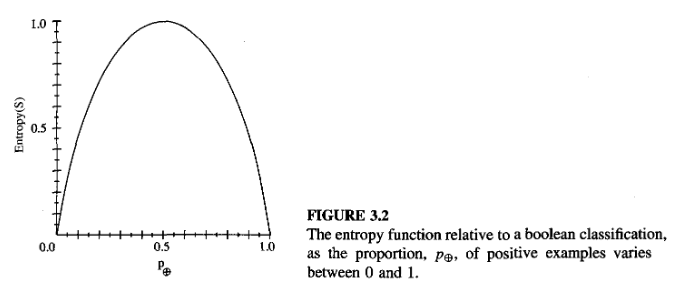

Introduction
Machine learning is inherently a multidisciplinary field. It draws on results from artificial intelligence, probability, statistics, complexity theory, and many more.
Well-Posed Learning Problems
Definition: A computer program is said to learn from experience \(E\) with respect to some class of tasks \(T\) and performance measure \(P\), if its performance at tasks in \(T\), as measured by \(P\), improves with experience \(E\).
Robot Driving Learning Problem:
- Task \(T\): driving on public four-lane highways using vision sensors
- Performance measure \(P\): average distance traveled before an error
- Training experience \(E\): a sequence of images and steering commands recorded while observing a human driver
Designing a Learning System
Consider designing a program to learn to player checkers. Assume no external teacher.
- Task \(T\): playing checkers
- Performance measure \(P\): percent of games won
- Training experience \(E\): games played against itself
Choosing the Training Experience
- One key attribute is whether the training experience provides direct or indirect feedback regarding the choices made by the performance system
- Direct training examples can consist of individual checker board states and the correct move for each
- Indirect training examples may consist of move sequences and their final outcomes
- A second important attribute of the training experience is the degree to which the learner controls the sequence of training examples
- A third important attribute is how well it represents the distribution of examples over which the final system performance \(P\) must be measured
- In practice, it is often necessary to learn from a distribution of examples that is somewhat different from those on which the final system will be evaluated
- Most current theory of machine learning rests on the assumption that the distribution of training examples is identical to the distribution of test examples
Choosing the Target Function
The target function will determine what type of knowledge will be learned and how it will be used by the performance program. Let us assume a target function \(V\) that maps any legal board state from the set \(B\) to some real value. We intend for this target function \(V\) to assign higher scores to better board states
Let us define the target value \(V(b)\) for an arbitrary board state \(b\) in \(B\), as follows:
- if \(b\) is a final board state that is won, then \(V(b)\) = 100
- if \(b\) is a final board state that is lost, then \(V(b)\) = -100
- if \(b\) is a final board state that is drawn, then \(V(b)\) = 0
- if \(b\) is not a final state in the game, then \(V(b) = V(b')\) where \(b'\) is the best final board state that can be achieved starting from \(b\) and playing optimally until the end of the game
However, searching for the optimal line of play, all the way until the end of the game, is not efficiently computable. The goal of learning in this case is to discover an operational description of \(V\). A description that can be used by the checkers-playing program to evaluate states and select moves within realistic time bounds. Thus, we have reduced the learning task in this case to the problem of discovering an operational description of the ideal target function \(V\).
Choosing a Representation for the Target Function
After specifying the ideal target function \(V\), we must choose a representation that the learning program will use to describe the function \(\hat{V}\) that it will learn. The choice of representation involves a crucial tradeoff. On one hand, we wish to pick a very expressive representation to allow represnting as close an approximation as possible to the target function \(V\). On the other hand, the more expressive the representation, the more training data the program will require in order to choose among the alternative hypotheses it can represent.
Choosing a Function Approximation Algorithm
While it is easy to assign a value to board states that correspond to the end of the game, it is less obvious how to assign training values to the intermediate board states that occur before the game’s end. The rule for estimating training values is summarized as
Rule for estimating training values: \[ V_{train}(b) \leftarrow \hat{V}(Successor(b)) \]
\(\hat{V}\) denotes the learner’s current approximation to \(V\) and \(Successor(b)\) denotes the next board state following \(b\). Iteratively estimating training values based on estimates of successor state values can be proven to converge toward perfect estimates of \(V_{train}\).
Adjusting the Weights
First, define the best fit to the training data. One common approach is to define the best hypothesis, or set of weights, which minimizes the squared error \(E\) between training (real) values and values predicted by hypothesis \(\hat{V}\).
\[ E \equiv \sum_{\langle b, V_{train}(b) \rangle \in\ training\ examples} (V_{train}(b) - \hat{V}(b))^2 \]
Thus, we seek the weights, or equivalently the \(\hat{V}\), that minimizes \(E\) for the observed training examples. Many algorithms will incremently refine the weights as new training examples become avavilable and become rebust to errors in these estimated training values. One example is least mean squares (LMS), which performs stochastic gradient-descent search through the space of hypotheses (weight values) to minimize the squared error \(E\).
LMS weight update rule
For each training example \(\langle b, V_{train}(b)\rangle\)
- Use the current weights to calculate \(\hat{V}(b)\)
- For each weight \(w_i\), update it as \(w_i \leftarrow w_i + \eta (V_{train}(b) - \hat{V}(b))x_i\)
Here, \(\eta\) is a small constant (e.g., 0.1) that moderates the size of the weight update. For a deeper intuitive understanding, notice that when the error \((V_{train}(b) - \hat{V}(b))\) is zero, the weights are not changed. However, if the is positive, that means \(\hat{V}(b)\) is too small and the weight is increased in proportion to the value of its corresponding feature.
Decision Tree Learning
Decision tree (DT) learning is one of the most commonly used methods for inductive inference. It is a method for approximating discrete-valued target functions that is robust to noisy data and capable of learning disjunctive expressions.
Decision Tree Representation
DTs classify instances by sorting a tree from the root to some leaf node, which provides classification of the instance. Each node in the tree specifies some attribute of the instance. Each path from the tree root to a leaf corresponds to a conjunction of attribute tests
Appropriate Problems for Decision Tree Learning
DT Learning is generally best suited to problems with the following characteristics:
- Instances are represented by attribute-value pairs. Instances are described by a fixed set of attributes (e.g., Temperature) and their values (e.g., Hot or 72F)
- The target function has discrete output values
- Disjunctive descriptions may be required. DT naturally represent disjunctive expressions
- The training data may contain errors. DT learning methods are robust to errors, both errors in classifications of the training examples and errors in the attribute values that describe these examples
- The training data may contain missing attribute values. DT methods can be used even when some training examples have unknown values
The Basic Decision Tree Learning Algorithm
Most algorithms that have been developed for learning DT trees are variations on a core algorithm that employs a top-down, greedy search through the space of possible DTs. The algorithms we will look at is ID3 (Quinlan 1986).
How Does ID3 Work?
- Learns DTs by constructing them top-down by evaluating each instance attribute to determine how well it classifies the training examples
- The best attribute is selected and used as the test at the root node of the tree
- A descendant of the root node is then created for each possible value of this attribute, and the training examples are sorted to the appropriate descendant node
This forms a greedy search for an acceptable DT, in which the algorithm never backtracks to reconsider earlier choices.
Which Attribute Is the Best Classifier?
We would like to select the attribute that is most useful for classifying examples. We define a statistical property, called information gain, as a measure for how well a given attribute separates the training examples according to their target classification.
To precisely define information gain, we use entropy. Entropy chracterizes the (im)purity of an arbitrary collection of examples. Given a collection \(S\), containing positive and negative examples, the entropy of \(S\) relative to boolean classification is
\[ Entropy(S) \equiv -p_+ log_2 p_+ - p_- log_2 p_- \]
where \(p_+\) is the proportion of positive examples in \(S\) and \(p_-\) is the proportion of negative examples in \(S\). We define 0 log 0 to be 0 in all calculations involving entropy. For example,
\[ Entropy([9+, 5-]) = -(9/14)log_2 (9/14) - (5/14)log_2 (5/14) = 0.940 \]
Notice entropy is 0 if all members of \(S\) belongs to the same class. Entropy will be 1 when the collection contains an equal number of positive and negative samples.

- Entropy of \(S\) relative to \(c\) different target attributes is defined as
\[ Entropy(S) \equiv \sum_{i=1}^{c} -p_i log_2 p_i \]
- Information gain measures the expected reduction in entropy. The information gain, \(Gain(S, A)\) of an attribute \(A\), relative to a collection of examples \(S\), is defined as
\[ Gain(S, A) \equiv Entropy(S) - \sum_{v\in Values(A)} \frac{|S_v|}{|S|} Entropy(S_v) \]
- For example, suppose \(S\) is a collection of days described by the attributes including \(Wind\), which can have the values \(Weak\) or \(Strong\). The information gain due to sorting the original 14 examples by the attribute \(Wind\) may be calculated as
\[ \begin{aligned} Values(Wind) &= Weak, Strong\\ S &= [9+, 5-] \\ S_{Weak} &\leftarrow [6+, 2-]\\ S_{Strong} &\leftarrow [3+, 3-]\\ Gain(S, Wind) &= Entropy(S) - \sum_{v\in(Weak, Strong)} \frac{|S_v|}{|S|} Entropy(S_v) \\ &= Entropy(S) - (8/14)Entropy(S_{Weak})\\ &\quad- (6/14)Entropy(S_{Strong})\\ &= 0.940 - (8/14)0.811 - (6/14)1.00\\ &=0.048 \end{aligned} \]
Hypothesis Space Search in Decision Tree Learning
- ID3 in its pure form performs no backtracking in its search. Therefore, it is susceptible to the usual risks of hill-climbing search without backtracking: converging to locally optimal solutions that are not globally optimimal.
- ID3 uses all training examples at each step in the search to make statistically based decisions regarding how to refine its current hypothesis. One advantage of using statistical properities (e.g., information gain) is that the resulting search is much less sensitive to errors in individual training examples.
Inductive Bias in Decision Tree Learning
Inductive bias is the set of assumptions that, together with the training data, deductively justify the classifications assigned by the learner to future instances. ID3 chooses the first acceptable tree it encounters in its simple-to-complex, hill-climbing search through the space of possible trees. It selects in favor of shorter trees over longer ones, and selects trees that place the attributes with highest information gain closest to the root.
Restriction Biases and Preference Biases
The inductive bias of ID3 follows from its search strategy, whereas the inductive bias of Candidate-Elimination algorithm follows from the definition of its search space (incomplete hypothesis space).
Thus, ID3 demonstrates a preference bias for shorter hypotheses. In contrast, the bias of Candidate-Elimination algorithm is in the form of a categorial restriction on the set of hypothesis considered. This form of bias is called restriction bias.
Typically, preference bias is more desirable as it allows the learner to work within a complete hypothesis space that is assured to contain the unknown target function.
Why Prefer Short Hypotheses?
Occam’s razor: Prefer the simplest hypothesis that fits the data.
Why? One argument is that because there are fewer short hypotheses than long ones (based on straightforward combinational arguments), it is less likely that one will find a short hypothesis that coincidentally fits the training data. In contrast, there are often many very complex hypotheses that fit the current training data but fail to generalize correctly to subsequent data.
Problems with Occam’s razor:
- There are many small sets of hypotheses that one can define. Why should we believe that the small set of hypotheses consisting of decision trees with short descriptions should be any more relevant than the multitude of other small sets of hypotheses that we might define before?
- The size of a hypothesis is determined by the particular representation used internally by the learner. Two learners using different internal representations could therefore arrive at different hypotheses, both justifying their contradictory conlcusions by Occam’s razor.
- Occam’s razor will product two different hypotheses from the same training examples when it is applied by two learners that perceive these examples in terms of different internal representations.
Issues in Decision Tree Learning
Practical issues in learning decision trees include determining how deeply to grow the tree, handling continuous attributes, choosing an appropriate attribute selection measure, handling training data with missing attribute values, handling attributes with differing costs, and improving computational efficiency.
Avoid Overfitting the Data
Definition: Given a hypothesis space \(H\), a hypothesis \(h\in H\) is said to overfit the training data if there exists some alternative hypothesis \(h'\in H\), such that \(h\) has smaller error than \(h'\) over the training examples, but \(h'\) has a smaller error than \(h\) over the entire distribution of instances.
One way overfitting can occur is when the training examples contain random errors or noise. However, overfitting is also possible even when the training data are noise-free, especially when small numbers of examples are associated with leaf nodes.
Approaches to avoid overfitting in decision tree learning can be grouped into two classes:
- approaches that stop growing the tree earlier, before it reaches the point where it perfectly classifies (memorizes) the training data
- approaches that allow the tree to overfit the data, and then post-prune the tree
Approaches to determine the criterion to be used to determine the correct final tree size:
- Use a separate set of examples, distinct from the training examples, to evaluate the utility of post-pruning nodes from the tree
- Use all the available data for training, but apply a statistical test to estimate whether expanding (or pruning) a particular node is likely to produce an improvement beyond the training set
- Use an explicit measure of the complexity for encoding the training examples and the decision tree, halting growth of the tree when this encoding size is minimized
The first approach is most commonly referred to as the training and validation set approach. The validation set is expected to provide a safety check against overfitting as it exhibits different fluctuations from the training set.
Reduced-error pruning is an approach that considers each of the decision nodes in the tree to be candidates for pruning. Pruning a decision node consists of removing the subtree rooted at that node, making it a leaf node, and assigning it the most common classification of the training examples affiliated with that node. Nodes are removed only if the resulting pruned tree increases accuracy over the validation set.